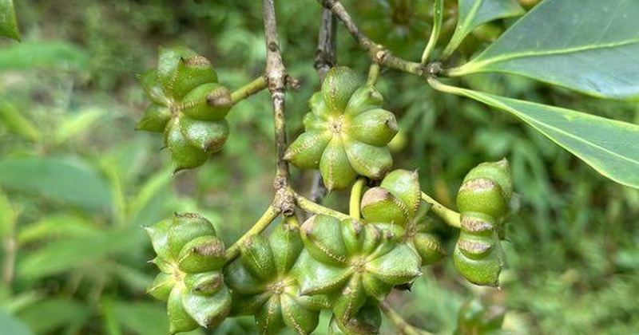

⚡Một loại ‘vàng thơm’ của Việt Nam được Mỹ và châu Âu đua nhau săn đón: Vừa thu về gần 40 triệu USD, chỉ rất ít quốc gia sở hữu
TIN MỚI Ảnh minh họa Thuộc nhóm gia vị có giá trị kinh tế cao và kén chọn điều kiện sinh trưởng bậc nhất, hoa hồi đang khẳng định vị thế của nông sản Việt trên thị trường quốc tế, mang về nguồn thu đáng kể từ xuất khẩu.